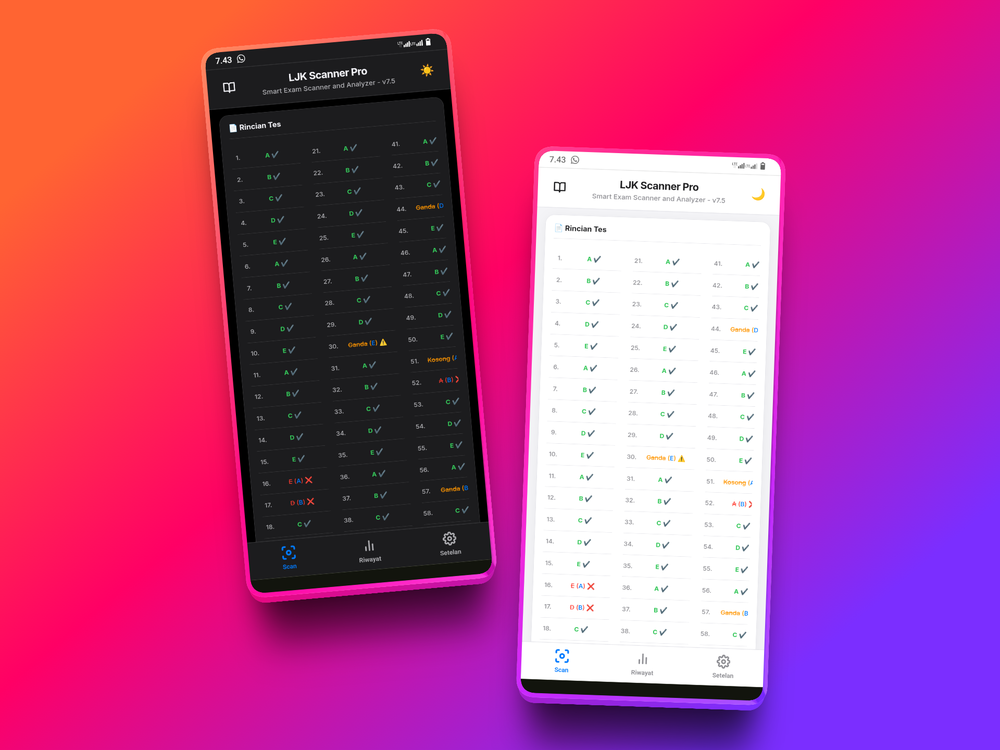
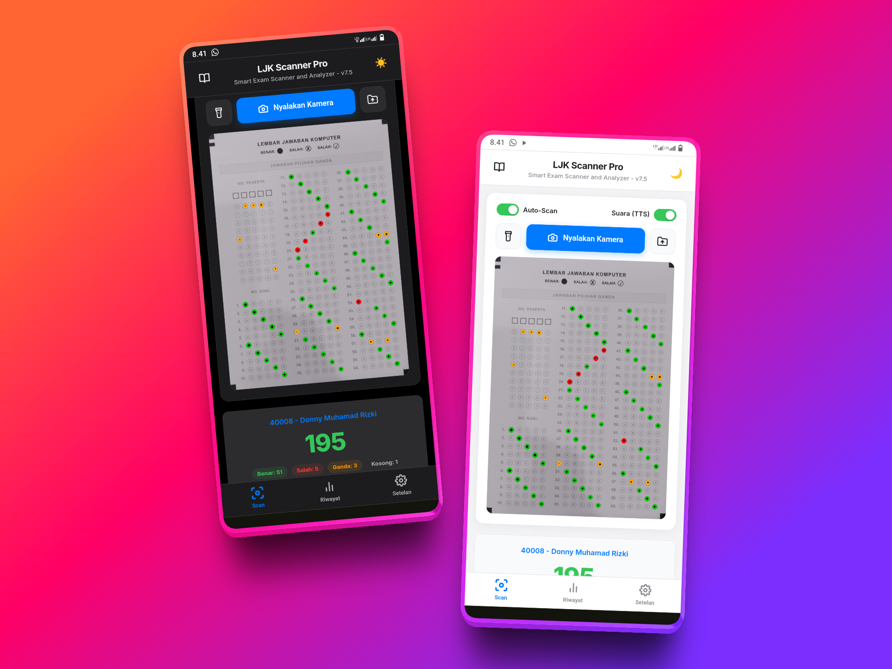
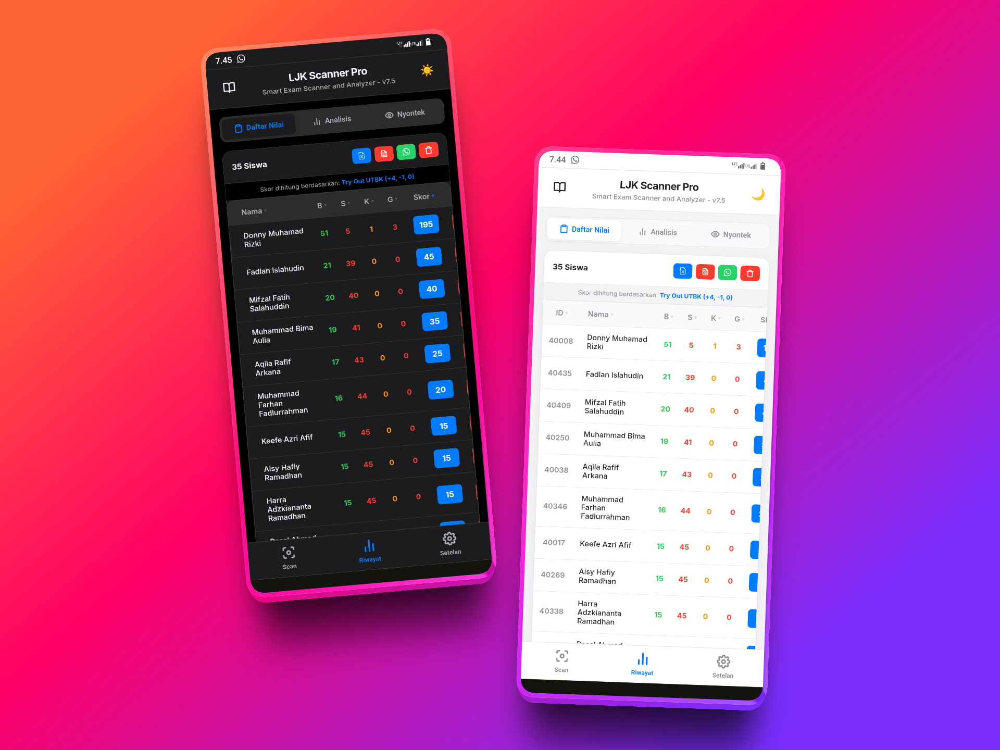
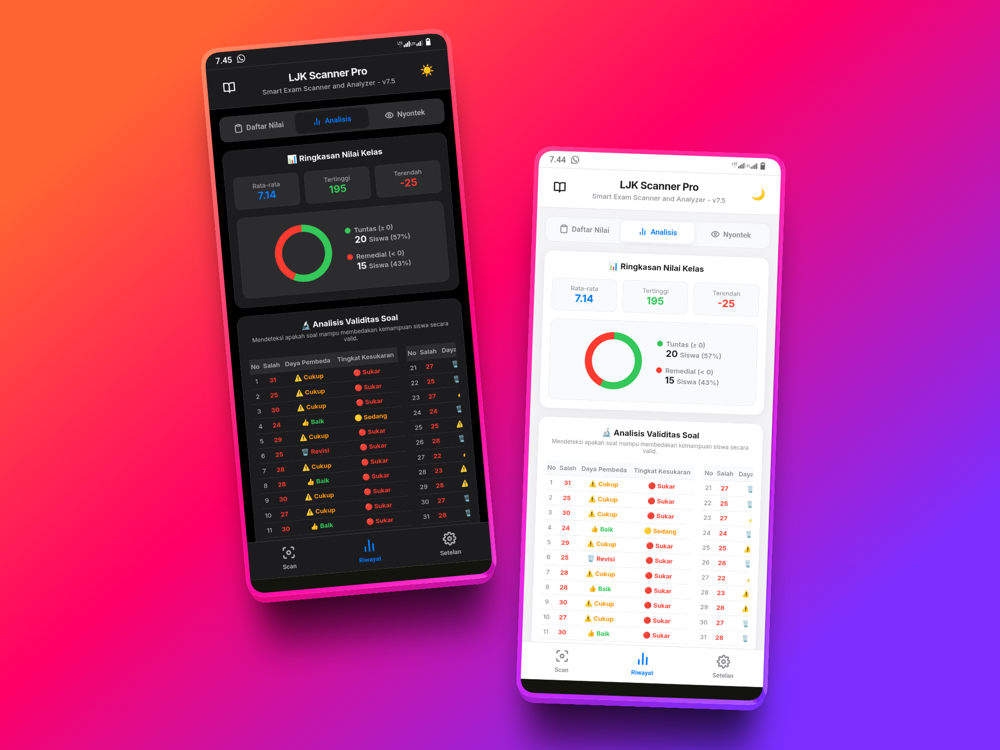
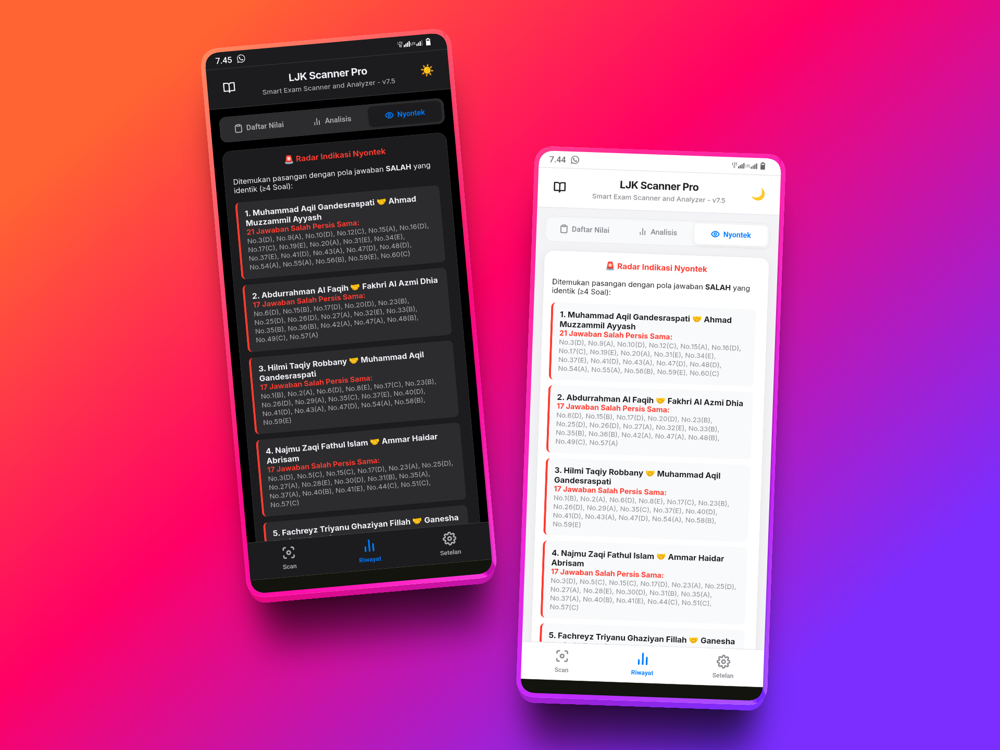
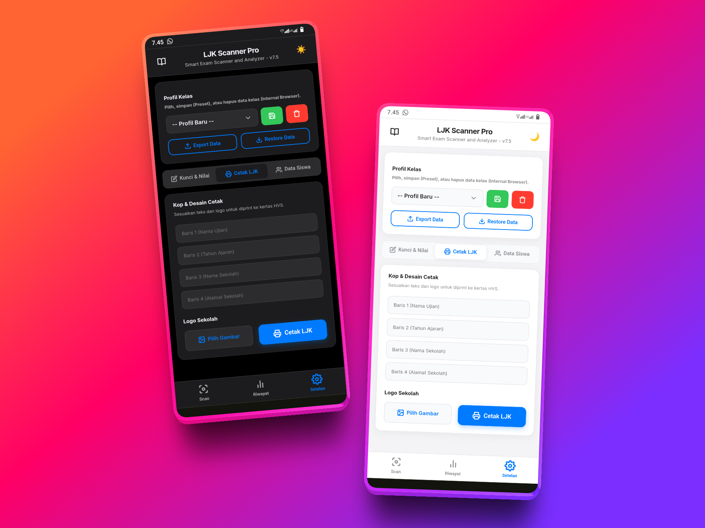
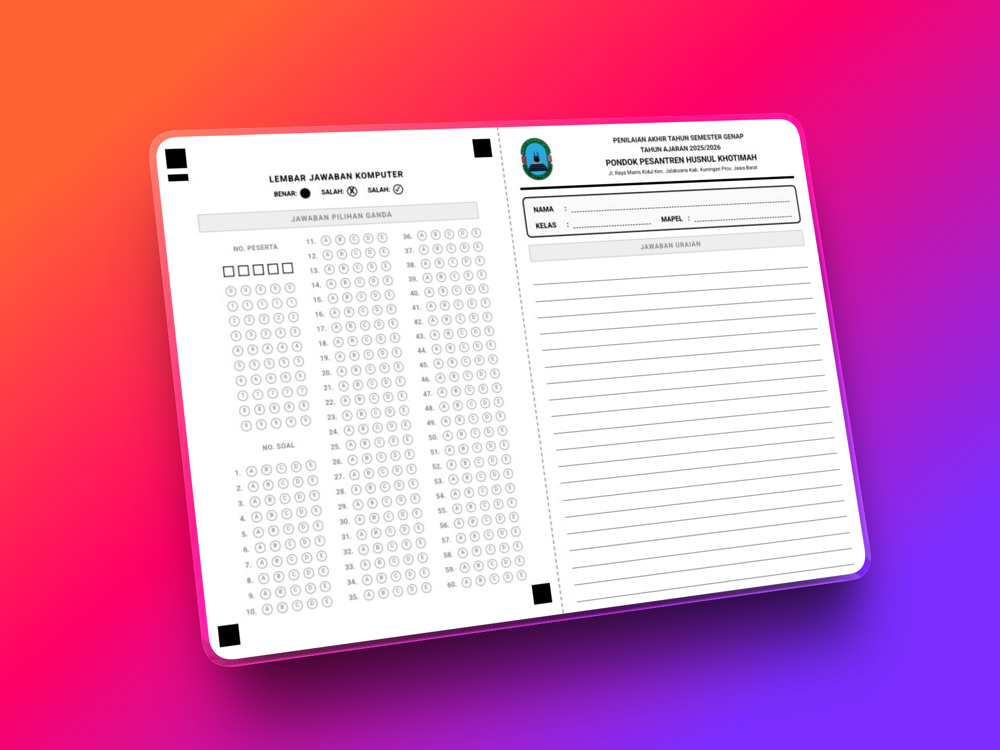
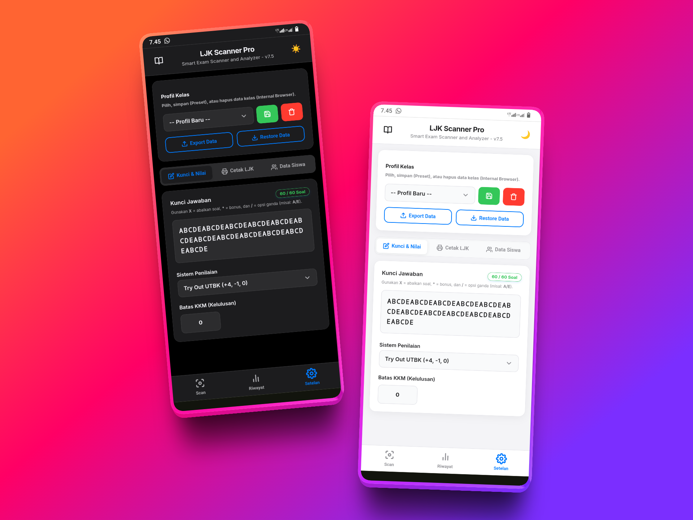
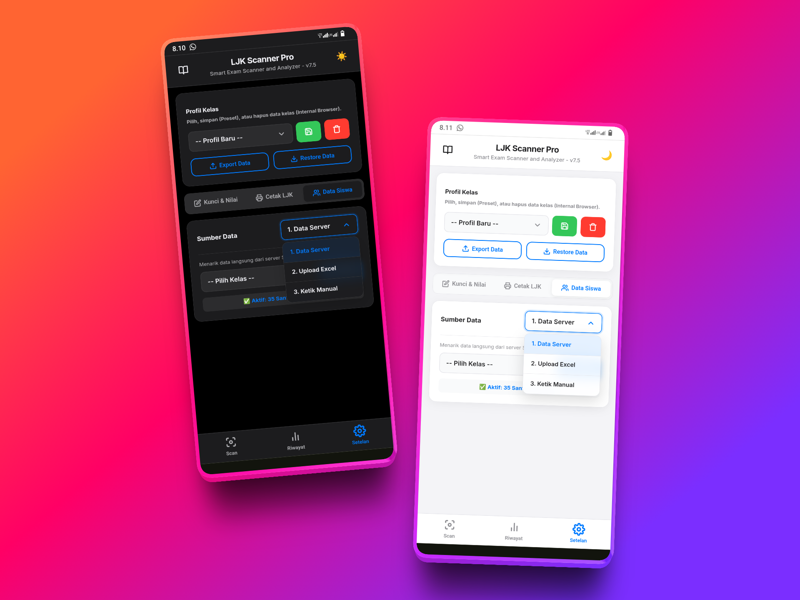
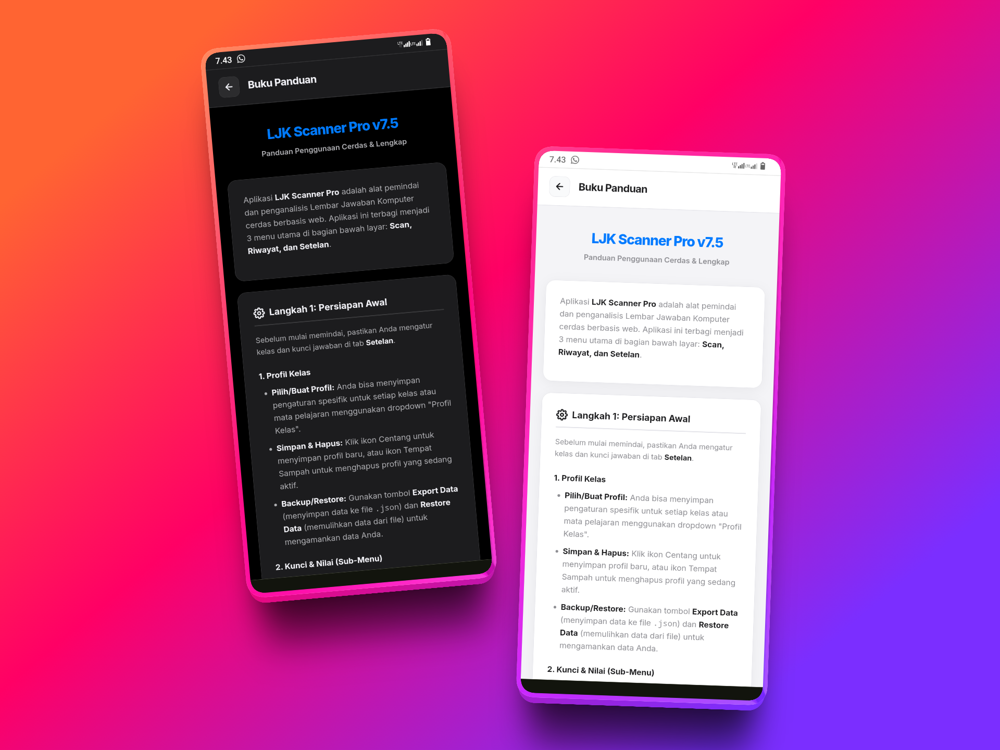

Tinggalkan alat pemindai mahal. Koreksi ujian dalam hitungan detik, cetak LJK sendiri, dan deteksi kecurangan langsung dari genggaman Anda.

Didukung oleh mesin pembaca optik (OpenCV) tingkat tinggi yang kebal terhadap kemiringan. Dapatkan rincian jawaban (Benar, Salah, Ganda, Kosong) detik itu juga, lengkap dengan dukungan suara AI otomatis (TTS)!

Berhenti merekap nilai ke buku. Semua data siswa beserta skor akhirnya tersusun dalam satu tabel interaktif yang bisa diurutkan (Ranking) secara instan.

Tingkatkan kualitas ujian Anda! Aplikasi ini membedah setiap soal secara mendalam dan menyajikannya lewat visualisasi grafik yang memanjakan mata.

Fitur revolusioner untuk menjaga integritas kelas. Algoritma kami bekerja layaknya detektif untuk membongkar indikasi contek-menyontek massal.

Atur desain LJK sesuai dengan kebutuhan instansi. Anda memegang kendali penuh atas teks dan identitas yang akan terpampang di lembar ujian.

Berhenti berlangganan LJK pabrikan! Kami men-generate file PDF LJK siap cetak dengan ukuran statis yang sangat kokoh dan anti-geser.


Bebas menentukan Skor Mentah, Persentase Standar, atau model Try Out UTBK (+4, -1, 0). Dilengkapi fitur anulir soal (X) dan Bonus (*).

Bisa menarik ribuan data nama siswa langsung dari server Cloud (Supabase), Upload dari file Excel, atau input manual per kelas.

Tersedia Mode Gelap premium yang ramah mata. Aplikasi bisa di-Install (PWA) untuk dijalankan dengan kecepatan super tanpa kuota internet!
Bergabunglah dengan pengajar modern. Hemat 90% waktu Anda untuk mengoreksi ujian.
Gunakan Aplikasi Sekarang (Gratis)